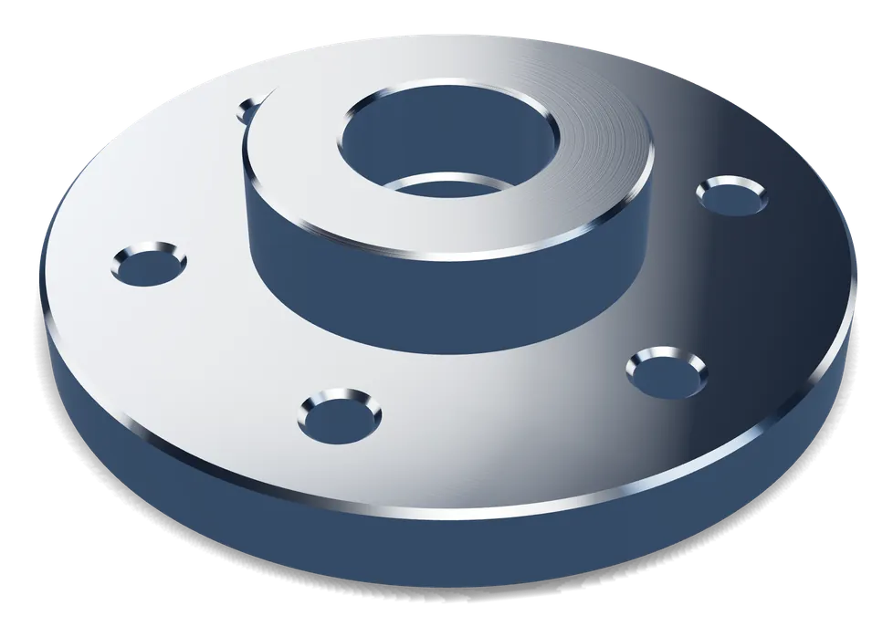
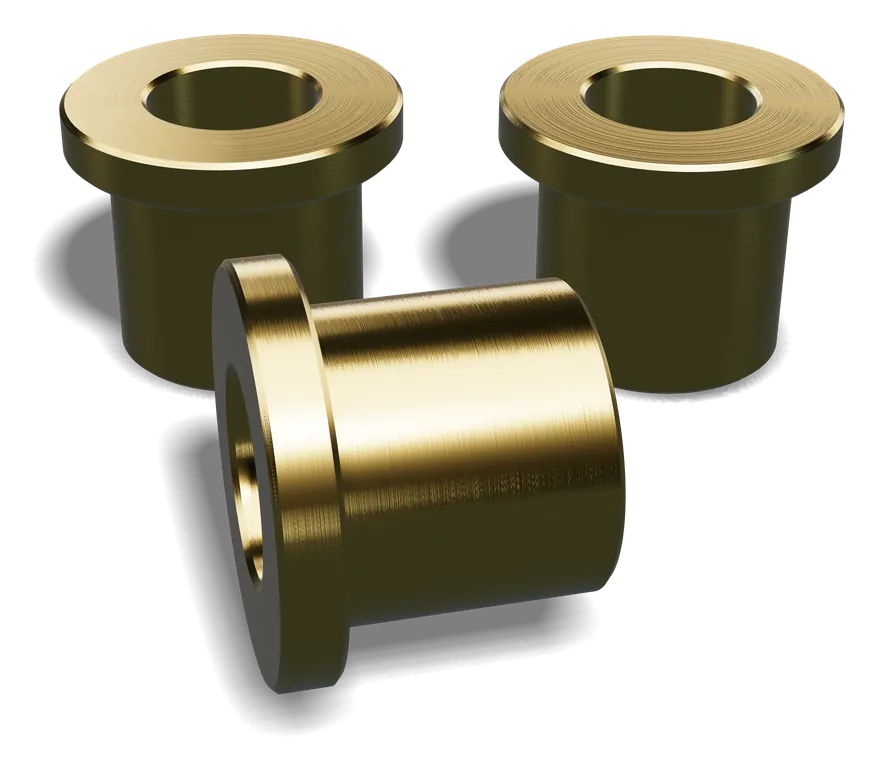

Maschinen- und Anlagenbau
Wellen, Buchsen, Platten und Sonderteile für Maschinen, Anlagen und Vorrichtungen.
Einsatzbereiche
Präzisionsteile für Anwendungen, bei denen es auf jedes Hundertstel ankommt.
Branchen
Unsere Kunden sind Unternehmen, die sich auf maßhaltige Teile und verlässliche Termine verlassen müssen.
Wellen, Buchsen, Platten und Sonderteile für Maschinen, Anlagen und Vorrichtungen.
Präzise Dreh- und Frästeile für Zulieferer sowie für den Prüf- und Betriebsmittelbau.
Achsen, Rollen, Lagersitze und Halterungen für zuverlässige Förder- und Logistikanlagen.
Anschlussteile, Adapter und Gehäuse mit engen Toleranzen und sauberen Gewinden.
Robuste Bauteile und Ersatzteile für Land- und Nutzfahrzeugtechnik.
Einzelteile und Kleinserien für individuelle Maschinen- und Vorrichtungskonzepte.
Referenzen
Viele unserer Kunden legen Wert auf Vertraulichkeit. Gern nennen wir Ihnen auf Anfrage Referenzen aus Ihrer Branche.






Kein Problem – entscheidend ist Ihr Bauteil. Senden Sie uns Ihre Zeichnung, wir prüfen die Machbarkeit.